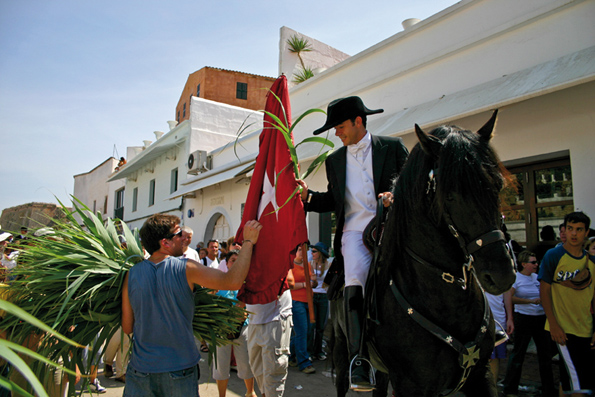

Ciutadella. Uno de los nuestros
 Vuelvo a perderme por las calles antiguas de Ciutadella, llenas de luz, bajo un cielo intensamente azul y muy cerca de un mar que lo ocupa todo, que blanquea los árboles de sal los días de tramontana y vuelve traslúcidos los viejos fantasmas de mi cabeza. Empecé a perderme por ahí hace muchos años, cuando en las noches calmadas de verano los pasos retumbaban en los callejones sin que apenas estorbara su sonido el maullido de un gato o el ladrido angustioso de un perro sin dueño. Vuelvo a tocar las paredes hinchadas por muchas capas de cal, las piedras desnudas de los palacios, la pintura resquebrajada de las ventanas viejas; vuelvo a pensar que este mundo pequeño, en el que cabe todo, es proclive a la fantasía, a la soledad, al desamparo y tal vez incluso al amor. A veces creí que el tiempo se detenía en esta pequeña ciudad medio encantada que me vio nacer, que al cruzar sus calles uno atravesaba una lámina invisible que conducía a la eternidad, siempre el mismo laberinto entrañable de callejuelas, el sonido insistente de las campanas, las sotanas negras de los curas, los pañuelos de las mujeres enlutadas, viejas en la flor de la edad, las pisadas sonoras de los caballos, la retahíla de vecinos que acompañaba a los muertos… Ya no lo creo. He visto desaparecer a muchos rostros habituales, gentes conocidas y desconocidas, parientes cercanos y lejanos, tipos populares, pintorescos, característicos que ya no pululan por estos andurriales, que a lo mejor sólo sonríen en las piedras toscas de los edificios, convertidos en sombras, o a lo mejor en luces de esta Ciutadella de luces y sombras, patrañas, cambios, tradiciones y verdades inamovibles que ya ni siquiera existen. Abro los ojos, levanto la cabeza y miro: el tiempo pasa siempre, nunca se detiene, y sólo en mi imaginación se ha detenido.
Vuelvo a perderme por las calles antiguas de Ciutadella, llenas de luz, bajo un cielo intensamente azul y muy cerca de un mar que lo ocupa todo, que blanquea los árboles de sal los días de tramontana y vuelve traslúcidos los viejos fantasmas de mi cabeza. Empecé a perderme por ahí hace muchos años, cuando en las noches calmadas de verano los pasos retumbaban en los callejones sin que apenas estorbara su sonido el maullido de un gato o el ladrido angustioso de un perro sin dueño. Vuelvo a tocar las paredes hinchadas por muchas capas de cal, las piedras desnudas de los palacios, la pintura resquebrajada de las ventanas viejas; vuelvo a pensar que este mundo pequeño, en el que cabe todo, es proclive a la fantasía, a la soledad, al desamparo y tal vez incluso al amor. A veces creí que el tiempo se detenía en esta pequeña ciudad medio encantada que me vio nacer, que al cruzar sus calles uno atravesaba una lámina invisible que conducía a la eternidad, siempre el mismo laberinto entrañable de callejuelas, el sonido insistente de las campanas, las sotanas negras de los curas, los pañuelos de las mujeres enlutadas, viejas en la flor de la edad, las pisadas sonoras de los caballos, la retahíla de vecinos que acompañaba a los muertos… Ya no lo creo. He visto desaparecer a muchos rostros habituales, gentes conocidas y desconocidas, parientes cercanos y lejanos, tipos populares, pintorescos, característicos que ya no pululan por estos andurriales, que a lo mejor sólo sonríen en las piedras toscas de los edificios, convertidos en sombras, o a lo mejor en luces de esta Ciutadella de luces y sombras, patrañas, cambios, tradiciones y verdades inamovibles que ya ni siquiera existen. Abro los ojos, levanto la cabeza y miro: el tiempo pasa siempre, nunca se detiene, y sólo en mi imaginación se ha detenido.
Calles silenciosas, desiertas de antaño, cuando según afirman voces proverbiales la ciudad se dormía en los laureles de los altos linajes que dejaron los conquistadores catalanes, arrancando alquerías y domicilios particulares de manos de los pobladores árabes. Calles donde resonaba mañana y tarde el martillo de las trabajadoras por cuenta de fábricas familiares con un sonsonete eterno sobre el mármol de engomar. Se oían también los gritos de las madres llamando a sus hijos, que se entretenían jugando por los recovecos de estas callejuelas donde nunca pasaba un coche. A lo mejor sonaba el traqueteo de una máquina de coser con la que las ajuntadores unían los cortes de piel de los futuros zapatos. Tal vez un pelotazo en la pared estorbaba la paz de los viejos que caminaban encorvados bajo sus boinas, apoyados en sus bastones, apretando una colilla de caliqueño entre los dientes. Los niños jugaban al fútbol en medio de la calle; una niña venía haciendo aspavientos con los brazos y aseguraba que estaba nadando en medio de un mar imaginario; otros mozalbetes jugaban a canicas, designando todos los movimientos del juego con palabras que nos dejaron los ingleses durante las dominaciones del siglo dieciocho; otros se mezclaban con las muchachitas y saltaban a la rayuela o a la comba, se escondían en un juego que llamaban “salvadas” y rechazaban a sus vecinitos en otro juego con las palabras tan decepcionantes como torna’l, torna’l que no és nostro (devuélvelo, devuélvelo que no es de los nuestros)
 Todas las mañanas, al salir del colegio para desayunar, después de la misa tediosa diaria, las madres preparaban bocadillos de pan con tomate, de pan con aceite y sal o azúcar a sus hijitos, que se los iban comiendo por esas calles y callejones, para envidia de los perros famélicos. Algunos, los más afortunados, veían cómo sus progenitoras quitaban un aro al fogón encendido con buen fuego de carbón para asar un trozo de sobrasada prendido en un tenedor viejo; la sobrasada, rezumante de grasa, pero requemada por el fuego, teñía de rojo el pan blanco. A lo mejor esos eran los hijos de algún bisutero avezado que fabricaba collares y pendientes con cuentas de cristal, como los que sirvieron para embaucar a los indios de América o a los negros de África; esos collares y prendedores constituían una industria que permitió retrasar el turismo durante largos años en la isla de Menorca, esos y los productos del calzado; junto con los de los payeses que criaban ganado y daban forma a los quesos que envejecían con un sabor recio, lleno de contrastes como los paisajes de esta isla aventada, erosionada por las inclemencias del tiempo, desvalijada por las sucesivas civilizaciones que pasaron por ella.
Todas las mañanas, al salir del colegio para desayunar, después de la misa tediosa diaria, las madres preparaban bocadillos de pan con tomate, de pan con aceite y sal o azúcar a sus hijitos, que se los iban comiendo por esas calles y callejones, para envidia de los perros famélicos. Algunos, los más afortunados, veían cómo sus progenitoras quitaban un aro al fogón encendido con buen fuego de carbón para asar un trozo de sobrasada prendido en un tenedor viejo; la sobrasada, rezumante de grasa, pero requemada por el fuego, teñía de rojo el pan blanco. A lo mejor esos eran los hijos de algún bisutero avezado que fabricaba collares y pendientes con cuentas de cristal, como los que sirvieron para embaucar a los indios de América o a los negros de África; esos collares y prendedores constituían una industria que permitió retrasar el turismo durante largos años en la isla de Menorca, esos y los productos del calzado; junto con los de los payeses que criaban ganado y daban forma a los quesos que envejecían con un sabor recio, lleno de contrastes como los paisajes de esta isla aventada, erosionada por las inclemencias del tiempo, desvalijada por las sucesivas civilizaciones que pasaron por ella.
Los payeses venían cada domingo a su posada; se enfundaban el traje de postín sobre sus pieles tostadas, sus cabellos sospechosamente rubios, sus ojos extrañamente azules, sus cuerpos altos y espigados y su hablar pausado y como para sus adentros, un poco con el aire de actores de andar por casa; con el aspecto romántico trasnochado, la fe del carbonero, el respeto profundo al señor de campos y caseríos, los ojos puestos en una sola muchacha que iba a acompañarles hasta que la muerte los separase. Los señores de las posesiones repartidas tras la conquista del rey Alfonso Tercero acaso tenían un coche negro, de movimientos tan tardos como los del campesinado, con una ventanilla ovalada detrás de la capota hinchada como la carpa de un circo. Recibían a sus payeses con aire paternal, bendecían sus uniones, festejaban sus boleros y rasgueos de guitarra -que caigue la luna, ay en medio de la plasa, que de las cuatro partes tu n’eres una-, asistían a los bautizos de sus retoños, comían pastissets llenos de conserva y bebían copas de vino dulce negándose al progreso que cacareaban desde Mallorca los primeros empresarios turísticos.
 Recuerdo que la primera vez que oí hablar alemán en Santandria creía que se lo inventaban, tan raro me parecía. Los primeros turistas llevaban camisas estampadas con flores y pantalón corto tan ancho que en el decir de mi padre cabían cuatro dentro y se les habría caído la cara de vergüenza si hubieran tenido que ponérselo en casa. Cuando el policía Barceló le dijo a una extranjera que no podía llevar biquini en la playa, que se requería traje de baño de una sola pieza, la turista le dijo alegremente que cuál quería que se quitara. Un amigo mío comentó que en Cala Morell había tres suecas que hacían calceta con los pechos al aire, y que ante la nube de curiosos decían esto ser normal allí, je, je… De pronto todo parecía normal, incluso lo que dijo Adolfo Suárez: “Hay que elevar a la categoría de normal lo que simplemente es normal en la calle” Llevábamos un retraso de medio siglo y lo solventamos con dos años de destape. De pronto estas mismas calles, y las terrazas del puerto, se llenaron de trajes multicolores, de expositores con quincalla para el consumo de los visitantes, de moscones que hablaban italiano con las italianas, que parecían enseñarles inglés a los británicos –this is the table; yes, yes…- y que ejercían de latin lovers… No sé si llegamos a digerirlo jamás, pero el turismo está ahí, al alcance de cada temporada, descuidado como la gallina de los huevos de plomo, depredador y depredado, convertido en la única industria que nos queda, o casi la única.
Recuerdo que la primera vez que oí hablar alemán en Santandria creía que se lo inventaban, tan raro me parecía. Los primeros turistas llevaban camisas estampadas con flores y pantalón corto tan ancho que en el decir de mi padre cabían cuatro dentro y se les habría caído la cara de vergüenza si hubieran tenido que ponérselo en casa. Cuando el policía Barceló le dijo a una extranjera que no podía llevar biquini en la playa, que se requería traje de baño de una sola pieza, la turista le dijo alegremente que cuál quería que se quitara. Un amigo mío comentó que en Cala Morell había tres suecas que hacían calceta con los pechos al aire, y que ante la nube de curiosos decían esto ser normal allí, je, je… De pronto todo parecía normal, incluso lo que dijo Adolfo Suárez: “Hay que elevar a la categoría de normal lo que simplemente es normal en la calle” Llevábamos un retraso de medio siglo y lo solventamos con dos años de destape. De pronto estas mismas calles, y las terrazas del puerto, se llenaron de trajes multicolores, de expositores con quincalla para el consumo de los visitantes, de moscones que hablaban italiano con las italianas, que parecían enseñarles inglés a los británicos –this is the table; yes, yes…- y que ejercían de latin lovers… No sé si llegamos a digerirlo jamás, pero el turismo está ahí, al alcance de cada temporada, descuidado como la gallina de los huevos de plomo, depredador y depredado, convertido en la única industria que nos queda, o casi la única.
Sentémonos en el puerto de Ciutadella una noche de agosto. Escuchemos el rumor de las conversaciones entremezcladas, de los idiomas mal aprendidos incluso por los hablantes nativos, de las músicas rítmicas pugnando por hacerse un hueco a cada trecho, en cada bar, en cada restaurante, y de las embarcaciones llenando las pausas con el soniquete de sus mástiles mecidos por el agua. Cuando la humedad de la noche nos entumezca los músculos y el alcohol nos nuble la cabeza podremos volver a deambular por estas calles oscurecidas, todavía olvidadas de la mano de Dios como en tiempos de los piratas Barbarroja, que hoy se han convertido en mercados de fruslerías. Olvidemos el pasado y caminemos hacia un futuro incierto con cada nuevo amanecer, con amores de un día, bailes de fandango aprendidos en academias, sones de guitarrillo y castañuelas, productos típicos de artesanía y supermercado y libros como este para turistas que acaso nunca supieron qué lengua se habla entre estas cuatro paredes viejas donde todavía se alza Ciutadella.